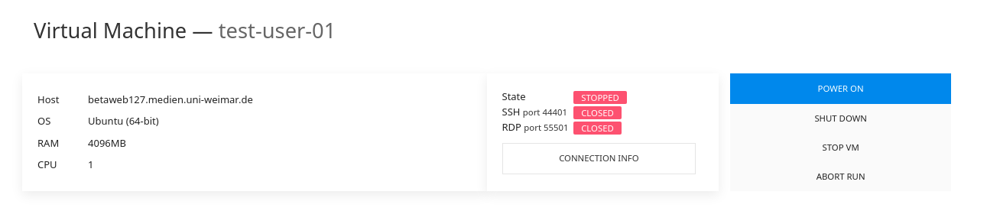
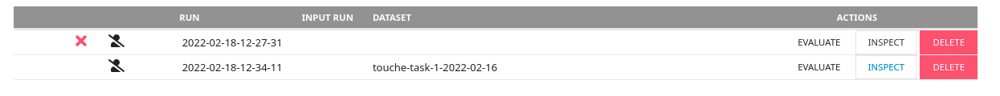

Touché Task 1: Argument Retrieval for Controversial Questions
Synopsis
- Task: Given a query about a controversial topic, retrieve and rank a relevant pair of sentences from a collection of arguments.
- Input: [data]
- Submission: [submit]
Task
The goal of Task 1 is to support users who search for arguments to be used in conversations (e.g., getting an overview of pros and cons or just looking for arguments in line with a user's stance). However, in contrast to previous iterations of this task, we now require retrieving a pair of sentences from a collection of arguments. Each sentence in this pair must be argumentative (e.g., a claim, a supporting premise, or a conclusion). Also, to encourage diversity of the retrieved results, sentences in this pair may come from two different arguments.
Register nowData
The corpus for Task 1 (available here) is a pre-processed version of the args.me corpus (version 2020-04-01) where each argument is split into sentences; you may index these sentences (and the complete arguments if you wish to) with your favorite retrieval system. To ease participation, you may also directly use the args.me search engine's API for a baseline retrieval and then extract the candidate pair of sentences.
Optional Data
Participants can access the query relevance judgments and quality judgments of the past edition of this task (where complete arguments were retrieved instead of sentence pairs). This data may serve as a source of distant supervision, but there is no strict requirement to harness it.
Touché 2021 topics (only titles) for Task 1 can be downloaded from here. The topics are provided as an XML
file.
Example topic:
<topic>
<number>1</number>
<title>Is human activity primarily responsible for global
climate change?</title>
</topic>
[Download quality judgments from Touché 2021 (args.me corpus version 2020-04-01)]
Evaluation
Be sure to retrieve a pair of ''strong'' argumentative sentences. Our human assessors will label the retrieved pairs manually, both for their general topical relevance and for their argument quality, i.e.,: (1) whether each sentence in the retrieved pair is argumentative (claim, supporting premise, or conclusion), (2) whether the sentence pair forms a coherent text (sentences in a pair must not contradict each other), (3) whether the sentence pair forms a short summary of the corresponding arguments from which these sentences come from; each sentence in the pair must ideally be the most representative / most important sentence of its corresponding argument.
The format of the relevance/quality judgment file:qid 0 pair relWith:
qid: The topic number.0: Unused, always 0.pair: The pair of sentence IDs (from the provided version of the args.me corpus).rel: The relevance judgment: -2 non-argument (spam), 0 (not relevant) to 3 (highly relevant). The quality judgment: 0 (low) to 3 (high).
Submission
We encourage participants to use TIRA for their submissions to allow for a
better reproducibility. Please also have a look at our TIRA
quickstart—in case of problems we will be able to assist you. Even though the preferred way of
run submission is TIRA, in case of problems you may also submit runs via email. We will try to quickly
review your TIRA or email submissions and provide feedback.
Runs may be either automatic or manual. An automatic run must not "manipulate" the topic titles via manual
intervention. A manual run is anything that is not an automatic run. Upon submission, please let us know
which of your runs are manual. For each topic, include a minimum of 100 and up to 1000 retrieved sentence
pairs. Each team can submit up to 5 different runs.
The submission format for the task will follow the standard TREC format:
qid stance pair rank score tag
With:
qid: The topic number.stance: The stance of the sentence pair ("PRO" or "CON").pair: The pair of sentence IDs (from the provided version of the args.me corpus) returned by your system for the topicqid.rank: The rank the document is retrieved at.score: The score (integer or floating point) that generated the ranking. The score must be in descending (non-increasing) order: it is important to handle tie scores.tag: A tag that identifies your group and the method you used to produce the run.
An example run for Task 1 is:
1 PRO S71152e5e-A66163a57__CONC__1,S71152e5e-A66163a57__PREMISE__2 1 17.89 myGroupMyMethod1 PRO S6c286161-Aafd7e261__CONC__1,S6c286161-Aafd7e261__PREMISE__1 2 16.43 myGroupMyMethod1 CON S72f5af83-Afb975dba__PREMISE__1,S72f5af83-Afb975dba__CONC__1 3 16.42 myGroupMyMethod...
Note: If you do not have stance information, use
Q0 as the value in the stance
column.
TIRA Quickstart
Participant software is run in a virtual machine. Log in to TIRA, go to the task's dataset page, and click on ">_ SUBMIT". Click the "CONNECTION INFO" button for how to connect to the virtual machine. Click on "POWER ON" if the state is not "RUNNING".

The software is executed on the command line with two parameters: (1) $inputDataset refers to a directory that contains the collection; (2) $outputDir refers to a directory in which the software has to create the submission file named run.txt. Specify exactly how each software of your virtual machine is run using the "Command" field in the TIRA web interface. Select touche-task-1-2022-02-16 as the input dataset.
As you "RUN" the software, you will not be able to connect to the virtual machine (takes at least 10 minutes). Once finished, click on "INSPECT" to check on the run and click on "EVALUATE" for a syntax check (give it a few minutes, then check back on the page). Your run will later be reviewed and evaluated by the organizers. If uncertain on something, ask in the forum or send a mail/message to Shahbaz.
Create a separate "Software" entry in the TIRA web interface for each of your approaches. NOTE: By submitting your software you retain full copyrights. You agree to grant us usage rights for evaluation of the corresponding data generated by your software. We agree not to share your software with a third party or use it for any purpose other than research.